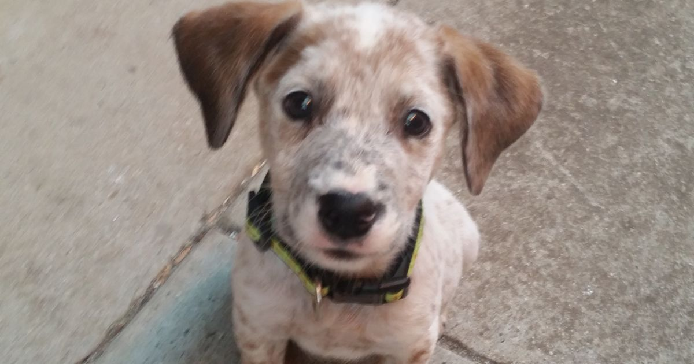

Darle un hogar a un perro es un acto de amor que brinda mucha alegría. Desafortunadamente es común que algunos propietarios que compran un cachorro de forma impulsiva decidan abandonarlo, sucede cuando se dan cuenta de que convivir con él implica un compromiso importante a largo plazo (unos 10 años), en términos de dedicación, paciencia y reestructuración de la rutina o estilo de vida. Al adoptar a un perro abandonado contribuyes a reducir el número de perros que viven en dichas entidades, y a mejorar las condiciones (recursos y fondos) de los que esperan que alguien los adopte.
| Cachupin | |
|  | Tomy | |
Flopi |